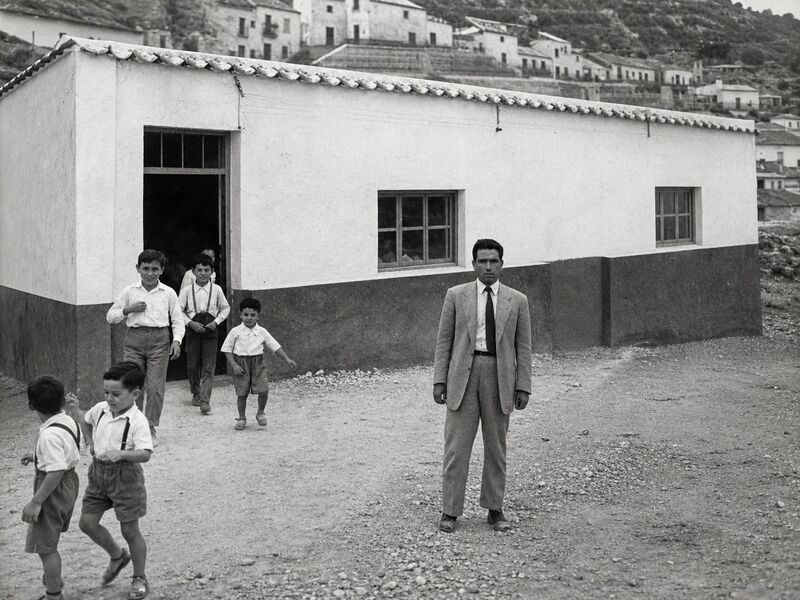
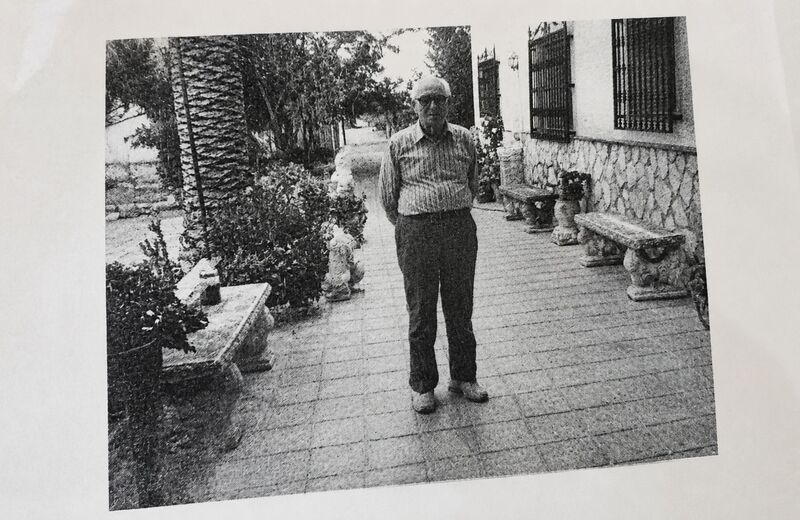

1923 — 2021

Maestro en Puerto Lumbreras (Murcia) durante más de seis décadas. Este archivo reúne sus fotografías, sus documentos y su propia voz.
Recorre su historia a través de 6 capítulos.

Escucha su vozEl corazón de este archivo son sus propias palabras: fragmentos originales de las entrevistas que le grabamos.
▶ Escuchar a Fulgencio“Enseñar también es sembrar” PENDIENTE — se sustituirá por una cita textual real